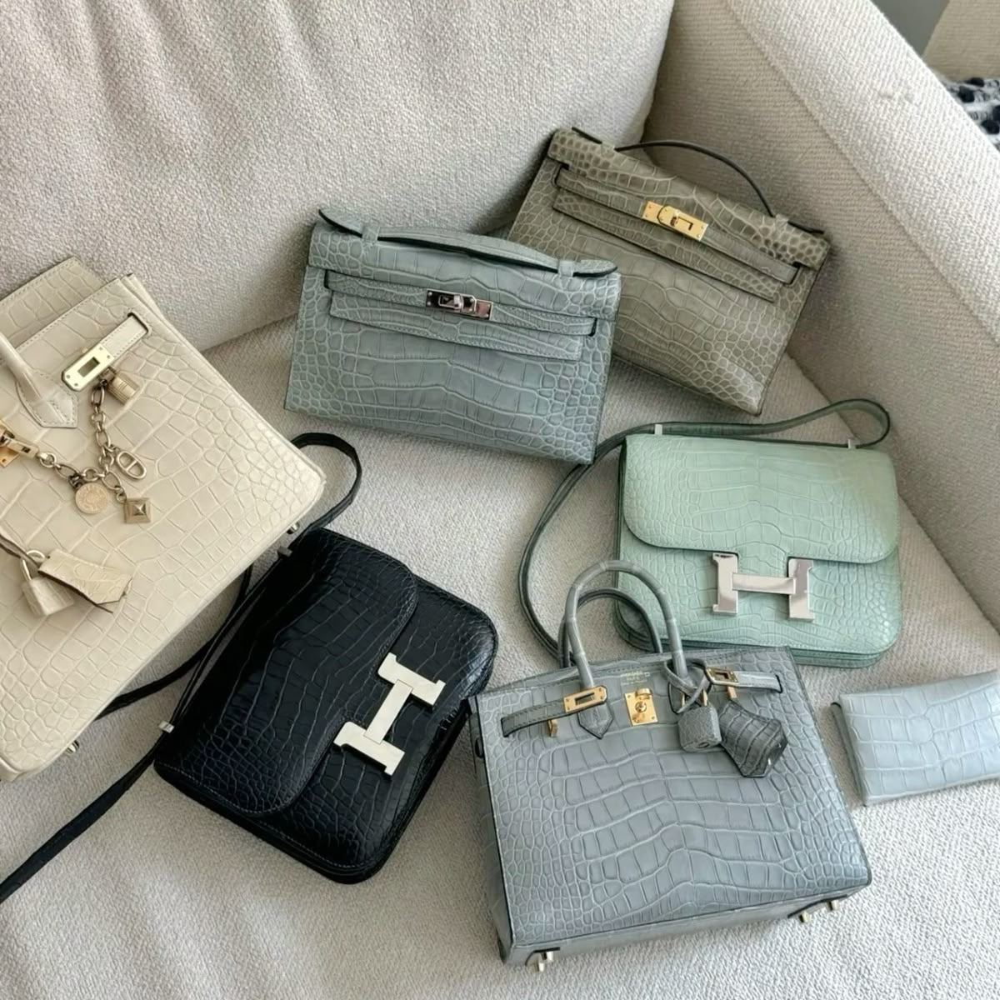

Entdecken Sie die zeitlose Eleganz und die handwerkliche Perfekion, die jede Tasche zu einem Unikat macht. Von der legendären Birkin bis zur raffinierten Constance - erfahren Sie mehr über die Geschichteb hinter den Ikonen,
Die ursprüngliche "Sac à Dépêches" wird entworfen und später nach Grace Kelly benannt.
Jane Birkin inspiriert die ikonische Tasche während eines Fluges.
Die elegante Schultertasche wird erstmals präsentiert.
Hermès-Taschen sind begehrte Sammlerstücke und Statussymbole weltweit.
Der Designprozess beginnt mit der Konzeption und Planung jeder Tasche. Ein perfektes Zusammenspiel von Kunst und Handwerk.
Die Auswahl der Materialien ist entscheidend. Hermès verwendet nur die besten Lederarten, wie Togo und Krokodil.
In Handarbeit wird jede Tasche gefertigt. Es werden präzise Nähtechniken und viel Geduld angewendet.
Jede Tasche wird einem rigorosen Qualitätscheck unterzogen, bevor sie in die Welt hinausgeht.
Entdecken Sie die exklusivsten Taschen, die jemals von Hermès kreiert wurden.

Birkin 25 - "Togo Gris Neve"
Die Birkin 25 ist ein stilvolles Modell in edlem, hellgrauem Togo-Leder mit palladiumfarbener Hardware.

Kelly 28 - "Alligator Mississippi Rouge de Coeur"
Die Kelly 28 ist ein elegantes Modell aus luxuriösem Alligatorleder in tiefem Rot mit goldener Hardware.

Constance 18 - "Alligatorleder / Eidechsenleder Vert Véronèse"
Diese Edition der Constance-Tasche ist in einem tiefen Nachthimmelblau gehalten und zeigt die exklusive Farbpalette von Hermès.

Die Hermès-Taschen sind nicht nur luxuriöse Accessoires, sondern auch ikonische Symbole des Stils und der Eleganz.
Grace Kelly machte die Kelly Bag berühmt, als sie sie benutzte, um sich vor Paparazzi zu schützen. Jane Birkin inspirierte die legendäre Birkin Bag durch ihre Suche nach einer perfekten, geräumigen Tasche.
Viele Prominente und Sammler betrachten Hermès-Taschen als Ausdruck von Prestige und Exklusivität.
Hermès-Taschen gehören zu den wenigen Modeartikeln, die ihren Wert im Laufe der Zeit steigern. Eine gut erhaltene Birkin oder Kelly kann ihren Kaufpreis vervielfachen.
Die Nachfrage übersteigt oft das Angebot, sodass Sammler bereit sind, Jahre auf bestimmte Modelle zu warten. Das macht Hermès-Taschen zu einer der sichersten Investitionen im Luxussegment.
Eine limitierte Edition oder eine Tasche aus exotischem Leder kann auf Auktionen für das Vielfache des ursprünglichen Preises verkauft werden.